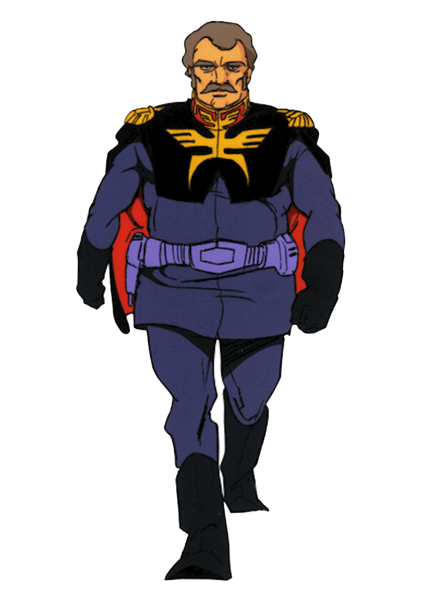

Ramba Ral
Information
Story
Age : 35 (at first appearance)
gender : male
Height : 169cm
Nationality : Principality of Zeon
Birthday : 79/November/5th
Favorite food : Ramen
Hobby : collection of ceramics
Personality : Obsessive
Ramba Ral is a Zeon officer in Mobile Suit Gundam, known for his tactical prowess and loyalty. He becomes obsessed with defeating the Gundam but questions the war after personal loss and sacrifices himself.
